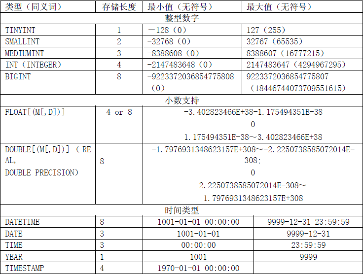

规范背景与目的
MySQL数据库与 Oracle、 SQL Server等数据库相比，有其内核上的优势与劣势。我们在使用MySQL数据库的时候需要遵循一定规范，扬长避短。本规范旨在帮助或指导RD、QA、OP等技术人员做出适合线上业务的数据库设计。在数据库变更和处理流程、数据库表设计、SQL编写等方面予以规范，从而为公司业务系统稳定、健康地运行提供保障。
设计规范
数据库设计
- 以下所有规范会按照【高危】、【强制】、【建议】三个级别进行标注，遵守优先级从高到低。
- 对于不满足【高危】和【强制】两个级别的设计，DBA会强制打回要求修改。
库名
- 【强制】库的名称必须控制在32个字符以内，相关模块的表名与表名之间尽量提现join的关系，如user表和user_login表。
- 【强制】库的名称格式：业务系统名称_子系统名，同一模块使用的表名尽量使用统一前缀。
- 【强制】一般分库名称命名格式是库通配名_编号，编号从0开始递增，比如wenda_001以时间进行分库的名称格式是“库通配名_时间”
- 【强制】创建数据库时必须显式指定字符集，并且字符集只能是utf8或者utf8mb4。创建数据库SQL举例：create database db1 default character set utf8;。
表结构
- 【强制】表和列的名称必须控制在32个字符以内，表名只能使用字母、数字和下划线，一律小写。
- 【强制】表名要求模块名强相关，如师资系统采用”sz”作为前缀，渠道系统采用”qd”作为前缀等。
- 【强制】创建表时必须显式指定字符集为utf8或utf8mb4。
- 【强制】创建表时必须显式指定表存储引擎类型，如无特殊需求，一律为InnoDB。当需要使用除InnoDB/MyISAM/Memory以外的存储引擎时，必须通过DBA审核才能在生产环境中使用。因为Innodb表支持事务、行锁、宕机恢复、MVCC等关系型数据库重要特性，为业界使用最多的MySQL存储引擎。而这是其他大多数存储引擎不具备的，因此首推InnoDB。
- 【强制】建表必须有comment
- 【建议】建表时关于主键：(1)强制要求主键为id，类型为int或bigint，且为auto_increment(2)标识表里每一行主体的字段不要设为主键，建议设为其他字段如user_id，order_id等，并建立unique key索引（可参考cdb.teacher表设计）。因为如果设为主键且主键值为随机插入，则会导致innodb内部page分裂和大量随机I/O，性能下降。
- 【建议】核心表（如用户表，金钱相关的表）必须有行数据的创建时间字段create_time和最后更新时间字段update_time，便于查问题。
- 【建议】表中所有字段必须都是NOT NULL属性，业务可以根据需要定义DEFAULT值。因为使用NULL值会存在每一行都会占用额外存储空间、数据迁移容易出错、聚合函数计算结果偏差等问题。
- 【建议】建议对表里的blob、text等大字段，垂直拆分到其他表里，仅在需要读这些对象的时候才去select。
- 【建议】反范式设计：把经常需要join查询的字段，在其他表里冗余一份。如user_name属性在user_account，user_login_log等表里冗余一份，减少join查询。
- 【强制】中间表用于保留中间结果集，名称必须以tmp_开头。备份表用于备份或抓取源表快照，名称必须以bak_开头。中间表和备份表定期清理。
- 【强制】对于超过100W行的大表进行alter table，必须经过DBA审核，并在业务低峰期执行。因为alter table会产生表锁，期间阻塞对于该表的所有写入，对于业务可能会产生极大影响。
列数据类型优化
- 【建议】表中的自增列（auto_increment属性），推荐使用bigint类型。因为无符号int存储范围为-2147483648~2147483647（大约21亿左右），溢出后会导致报错。
- 【建议】业务中选择性很少的状态status、类型type等字段推荐使用tinytint或者smallint类型节省存储空间。
- 【建议】业务中IP地址字段推荐使用int类型，不推荐用char(15)。因为int只占4字节，可以用如下函数相互转换，而char(15)占用至少15字节。一旦表数据行数到了1亿，那么要多用1.1G存储空间。 SQL：select inet_aton(‘192.168.2.12’); select inet_ntoa(3232236044); PHP: ip2long(‘192.168.2.12’); long2ip(3530427185);
- 【建议】不推荐使用enum，set。 因为它们浪费空间，且枚举值写死了，变更不方便。推荐使用tinyint或smallint。
- 【建议】不推荐使用blob，text等类型。它们都比较浪费硬盘和内存空间。在加载表数据时，会读取大字段到内存里从而浪费内存空间，影响系统性能。建议和PM、RD沟通，是否真的需要这么大字段。Innodb中当一行记录超过8098字节时，会将该记录中选取最长的一个字段将其768字节放在原始page里，该字段余下内容放在overflow-page里。不幸的是在compact行格式下，原始page和overflow-page都会加载。
- 【建议】存储金钱的字段，建议用int，程序端乘以100和除以100进行存取。因为int占用4字节，而double占用8字节，空间浪费。
- 【建议】文本数据尽量用varchar存储。因为varchar是变长存储，比char更省空间。MySQL server层规定一行所有文本最多存65535字节，因此在utf8字符集下最多存21844个字符，超过会自动转换为mediumtext字段。而text在utf8字符集下最多存21844个字符，mediumtext最多存2^24/3个字符，longtext最多存2^32个字符。一般建议用varchar类型，字符数不要超过2700。
- 详细存储大小参加下图：

索引设计
- 【强制】InnoDB表必须主键为id int/bigint auto_increment,且主键值禁止被更新。
- 【建议】主键的名称以“pk_”开头，唯一键以“uk_”或“uq_”开头，普通索引以“idx_”开头，一律使用小写格式，以表名/字段的名称或缩写作为后缀。
- 【强制】InnoDB和MyISAM存储引擎表，索引类型必须为BTREE；MEMORY表可以根据需要选择HASH或者BTREE类型索引。
- 【强制】单个索引中每个索引记录的长度不能超过64KB。
- 【建议】单个表上的索引个数不能超过7个。
- 【建议】在建立索引时，多考虑建立联合索引，并把区分度最高的字段放在最前面。如列userid的区分度可由select count(distinct userid)计算出来。
- 【建议】在多表join的SQL里，保证被驱动表的连接列上有索引，这样join执行效率最高。
- 【建议】建表或加索引时，保证表里互相不存在冗余索引。对于MySQL来说，如果表里已经存在key(a,b)，则key(a)为冗余索引，需要删除。
分库分表、分区表
- 【强制】分区表的分区字段（partition-key）必须有索引，或者是组合索引的首列。
- 【强制】单个分区表中的分区（包括子分区）个数不能超过1024。
- 【强制】上线前RD或者DBA必须指定分区表的创建、清理策略。
- 【强制】访问分区表的SQL必须包含分区键。
- 【建议】单个分区文件不超过2G，总大小不超过50G。建议总分区数不超过20个。
- 【强制】对于分区表执行alter table操作，必须在业务低峰期执行。
- 【强制】采用分库策略的，库的数量不能超过1024
- 【强制】采用分表策略的，表的数量不能超过4096
- 【建议】单个分表不超过500W行，ibd文件大小不超过2G，这样才能让数据分布式变得性能更佳。
- 【建议】水平分表尽量用取模方式，日志、报表类数据建议采用日期进行分表。
字符集
- 【强制】数据库本身库、表、列所有字符集必须保持一致，为utf8或utf8mb4。
- 【强制】前端程序字符集或者环境变量中的字符集，与数据库、表的字符集必须一致，统一为utf8。
2.1.7 程序层DAO设计建议 - 【建议】新的代码不要用model，推荐使用手动拼SQL+绑定变量传入参数的方式。因为model虽然可以使用面向对象的方式操作db，但是其使用不当很容易造成生成的SQL非常复杂，且model层自己做的强制类型转换性能较差，最终导致数据库性能下降。
- 【建议】前端程序连接MySQL或者redis，必须要有连接超时和失败重连机制，且失败重试必须有间隔时间。
- 【建议】前端程序报错里尽量能够提示MySQL或redis原生态的报错信息，便于排查错误。
- 【建议】对于有连接池的前端程序，必须根据业务需要配置初始、最小、最大连接数，超时时间以及连接回收机制，否则会耗尽数据库连接资源，造成线上事故。
- 【建议】对于log或history类型的表，随时间增长容易越来越大，因此上线前RD或者DBA必须建立表数据清理或归档方案。
- 【建议】在应用程序设计阶段，RD必须考虑并规避数据库中主从延迟对于业务的影响。尽量避免从库短时延迟（20秒以内）对业务造成影响，建议强制一致性的读开启事务走主库，或更新后过一段时间再去读从库。
- 【建议】多个并发业务逻辑访问同一块数据（innodb表）时，会在数据库端产生行锁甚至表锁导致并发下降，因此建议更新类SQL尽量基于主键去更新。
- 【建议】业务逻辑之间加锁顺序尽量保持一致，否则会导致死锁。
- 【建议】对于单表读写比大于10:1的数据行或单个列，可以将热点数据放在缓存里（如mecache或redis），加快访问速度，降低MySQL压力。
一个规范的建表语句示例
一个较为规范的建表语句为：
1 | CREATE TABLE USER ( |
SQL编写
DML语句
- 【强制】SELECT语句必须指定具体字段名称，禁止写成。因为select 会将不该读的数据也从MySQL里读出来，造成网卡压力。且表字段一旦更新，但model层没有来得及更新的话，系统会报错。
- 【强制】insert语句指定具体字段名称，不要写成insert into t1 values(…)，道理同上。
- 【建议】insert into…values(XX),(XX),(XX)…。这里XX的值不要超过5000个。值过多虽然上线很很快，但会引起主从同步延迟。
- 【建议】SELECT语句不要使用UNION，推荐使用UNION ALL，并且UNION子句个数限制在5个以内。因为union all不需要去重，节省数据库资源，提高性能。
- 【建议】in值列表限制在500以内。例如select… where userid in(….500个以内…)，这么做是为了减少底层扫描，减轻数据库压力从而加速查询。
- 【建议】事务里批量更新数据需要控制数量，进行必要的sleep，做到少量多次。
- 【强制】事务涉及的表必须全部是innodb表。否则一旦失败不会全部回滚，且易造成主从库同步终端。
- 【强制】写入和事务发往主库，只读SQL发往从库。
- 【强制】除静态表或小表（100行以内），DML语句必须有where条件，且使用索引查找。
- 【强制】生产环境禁止使用hint，如sql_no_cache，force index，ignore key，straight join等。因为hint是用来强制SQL按照某个执行计划来执行，但随着数据量变化我们无法保证自己当初的预判是正确的，因此我们要相信MySQL优化器！
- 【强制】where条件里等号左右字段类型必须一致，否则无法利用索引。
- 【建议】SELECT|UPDATE|DELETE|REPLACE要有WHERE子句，且WHERE子句的条件必需使用索引查找。
- 【强制】生产数据库中强烈不推荐大表上发生全表扫描，但对于100行以下的静态表可以全表扫描。查询数据量不要超过表行数的25%，否则不会利用索引。
- 【强制】WHERE 子句中禁止只使用全模糊的LIKE条件进行查找，必须有其他等值或范围查询条件，否则无法利用索引。
- 【建议】索引列不要使用函数或表达式，否则无法利用索引。如where length(name)=’Admin’或where user_id+2=10023。
- 【建议】减少使用or语句，可将or语句优化为union，然后在各个where条件上建立索引。如where a=1 or b=2优化为where a=1… union …where b=2, key(a),key(b)。
- 【建议】分页查询，当limit起点较高时，可先用过滤条件进行过滤。如select a,b,c from t1 limit 10000,20;优化为: select a,b,c from t1 where id>10000 limit 20;。
多表连接
- 【强制】禁止跨db的join语句。因为这样可以减少模块间耦合，为数据库拆分奠定坚实基础。
- 【强制】禁止在业务的更新类SQL语句中使用join，比如update t1 join t2…。
- 【建议】不建议使用子查询，建议将子查询SQL拆开结合程序多次查询，或使用join来代替子查询。
- 【建议】线上环境，多表join不要超过3个表。
- 【建议】多表连接查询推荐使用别名，且SELECT列表中要用别名引用字段，数据库.表格式，如select a from db1.table1 alias1 where …。
- 【建议】在多表join中，尽量选取结果集较小的表作为驱动表，来join其他表。
事务
- 【建议】事务中INSERT|UPDATE|DELETE|REPLACE语句操作的行数控制在2000以内，以及WHERE子句中IN列表的传参个数控制在500以内。
- 【建议】批量操作数据时，需要控制事务处理间隔时间，进行必要的sleep，一般建议值5-10秒。
- 【建议】对于有auto_increment属性字段的表的插入操作，并发需要控制在200以内。
- 【强制】程序设计必须考虑“数据库事务隔离级别”带来的影响，包括脏读、不可重复读和幻读。线上建议事务隔离级别为repeatable-read。
- 【建议】事务里包含SQL不超过5个（支付业务除外）。因为过长的事务会导致锁数据较久，MySQL内部缓存、连接消耗过多等雪崩问题。
- 【建议】事务里更新语句尽量基于主键或unique key，如update … where id=XX; 否则会产生间隙锁，内部扩大锁定范围，导致系统性能下降，产生死锁。
- 【建议】尽量把一些典型外部调用移出事务，如调用webservice，访问文件存储等，从而避免事务过长。
- 【建议】对于MySQL主从延迟严格敏感的select语句，请开启事务强制访问主库。
排序和分组
- 【建议】减少使用order by，和业务沟通能不排序就不排序，或将排序放到程序端去做。order by、group by、distinct这些语句较为耗费CPU，数据库的CPU资源是极其宝贵的。
- 【建议】order by、group by、distinct这些SQL尽量利用索引直接检索出排序好的数据。如where a=1 order by可以利用key(a,b)。
- 【建议】包含了order by、group by、distinct这些查询的语句，where条件过滤出来的结果集请保持在1000行以内，否则SQL会很慢。
线上禁止使用的SQL语句
- 【高危】禁用update|delete t1 … where a=XX limit XX; 这种带limit的更新语句。因为会导致主从不一致，导致数据错乱。建议加上order by PK。
- 【高危】禁止使用关联子查询，如update t1 set … where name in(select name from user where…);效率极其低下。
- 【强制】禁用procedure、function、trigger、views、event、外键约束。因为他们消耗数据库资源，降低数据库实例可扩展性。推荐都在程序端实现。
- 【强制】禁用insert into …on duplicate key update…在高并发环境下，会造成主从不一致。
- 【强制】禁止联表更新语句，如update t1,t2 where t1.id=t2.id…。